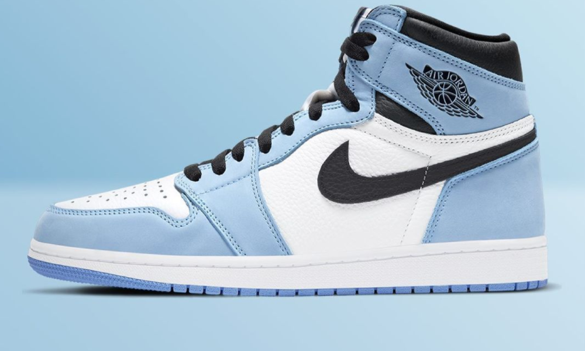

The Air Jordan 1 High debuted in 1985 as the first signature sneaker developed by Nike for Michael Jordan. The Peter Moore designed performance basketball sneaker featured a simple Nike Dunk inspired design that incorporated the Nike Swoosh and the Jordan Wings logo and featured Nike Air.
You can buy Jordan 1's here.

Michael Jordan's second signature model, the Air Jordan 2 first debuted in November 1986, and was designed by Bruce Killgore/Peter Moore. Created with high-end luxury in mind, the AJ2 was notable for its rich leather upper, lizard skin-style detailing, and noticeable lack of a Swoosh
You can buy Jordan 1's here.